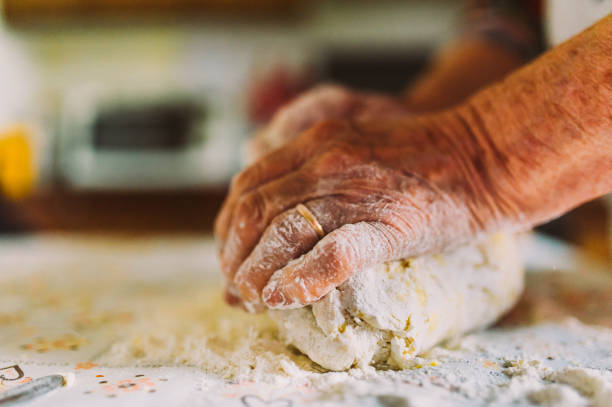

Inicio
Recetas
Eventos
Kids
Contacto
Las recetas del abuelo
Comidas Gourmet
Decoracion de tortas
Comidas para cumpleaños infantiles
Comidas Gourmet
Ñoquis
Pizza
Recetas saludables
Comidas para cumpleaños infantiles
Tortas de cumpleaños
Pastafrolas